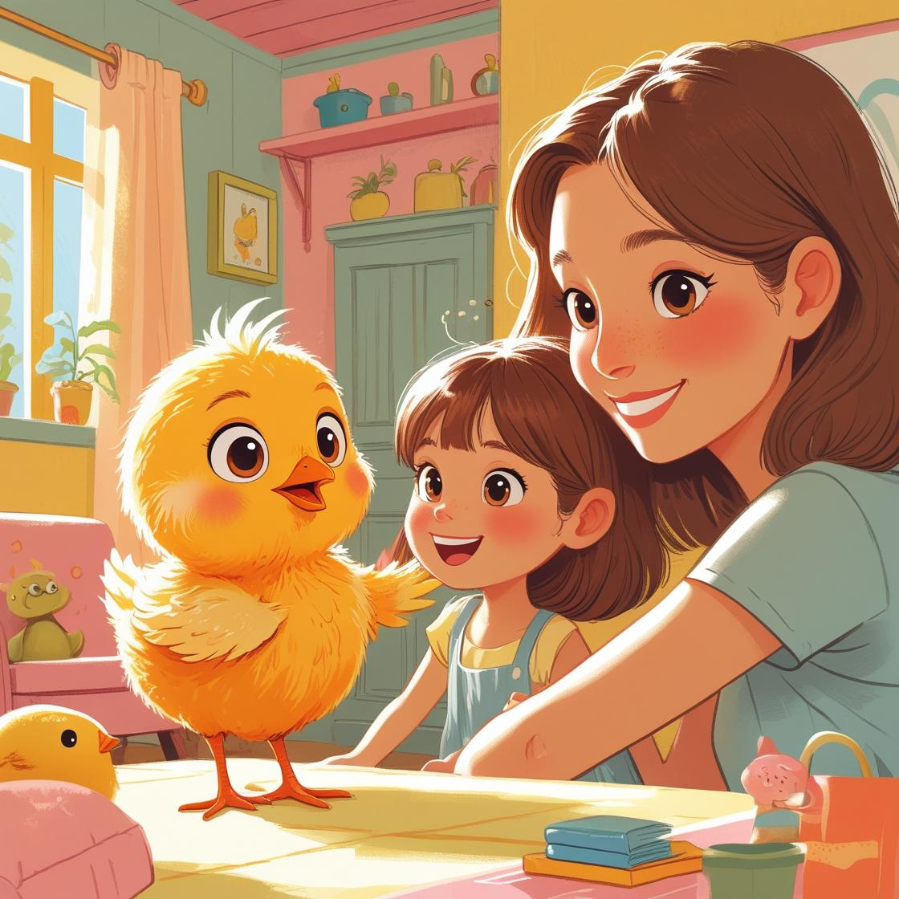

Goya era muy juguetón, y le compraron un juguete especial para pollitos.
El piso donde vivían era pequeño y tuvieron que comprar cosas pequeñas.
Al pollito Goya lo llevaron al veterinario para ver si tenía alguna enfermedad, y resulta que lo habían cuidado tan bien que no tenía nada, nada de nada.